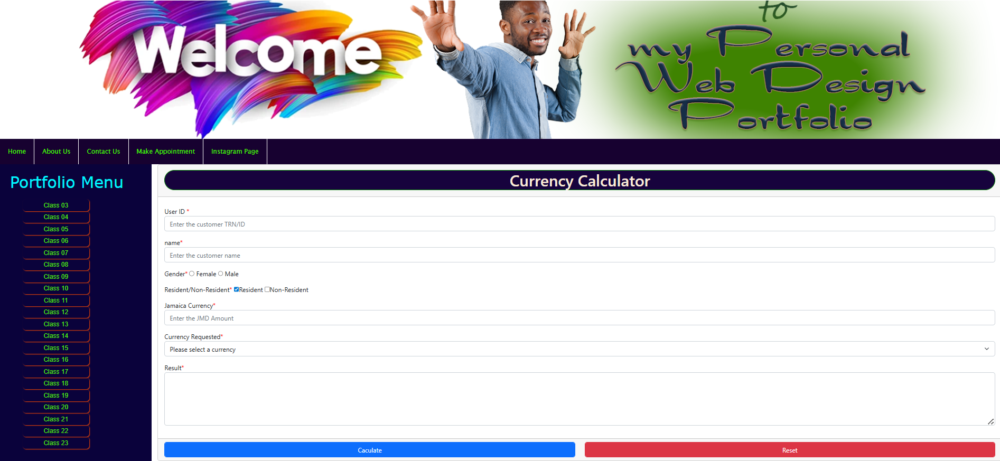

Starting My Journey in Website Development
September 24, 2025 by Adrienne Jobs

Hey! So I thought I’d start this blog to share a bit about my journey as an IT student. Out of all the areas in tech, web development really caught my attention.
I love how you can write some code and instantly see something take shape on the screen.
For me, it’s the mix of creativity and logic that makes it fun. I get to design and problem-solve at the same time. I’m still learning, but that’s exactly why I wanted to document the process.
Expect posts about projects I’m working on, mistakes I make, and the little wins along the way.
My First Website Project
September 25, 2025 by Adrienne Jobs

So, my first web project was a simple portfolio site along with a currency calculator. Honestly, it wasn’t the prettiest thing ever, but it felt so good to build something from scratch.
I learned that planning a layout before coding saves a lot of stress, and making a site responsive is trickier than it looks
Even though the design makes me cringe a little now, I’m proud of it. It was my first real step into website development, and it gave me the push to keep going.
Next up, I want to add more interactivity and just keep experimenting.